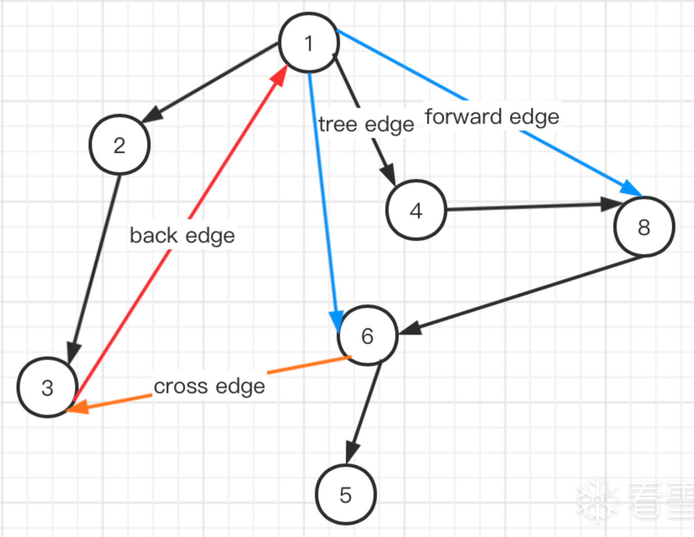
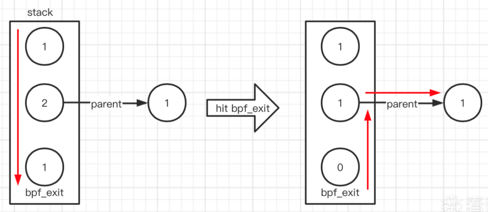

最近想对kernel的一个模块进行深入研究，希望能够做到对代码流程和常见的漏洞利用方法都有了解
bpf_create_map
用户程序调用 syscall(__NR_bpf, BPF_MAP_CREATE, &attr, sizeof(attr))申请创建一个 map，在 attr结构体中指定 map的类型、大小、最大容量等属性。内核会创建一个 map数据结构，最终返回 map的文件描述符。这个文件是用户态和内核态共享的，因此后续内核态和用户态可以对这块共享内存进行读写
1 | int bpf_create_map(enum bpf_map_type map_type, int key_size, |
随后会调用 bpf_create_map_xattr
1 | int bpf_create_map_xattr(const struct bpf_create_map_attr *create_attr) |
前面进行了属性attr的赋值，最后执行了sys_bpf
1 | static inline int sys_bpf(enum bpf_cmd cmd, union bpf_attr *attr, |
最终会调用syscall，其中cmd为 BPF_MAP_CREATE，也就是会去执行创建MAP页面
1 | union bpf_attr { |
BPF_PROG_LOAD
用户程序调用 syscall(__NR_bpf, BPF_PROG_LOAD, &attr, sizeof(attr))来将我们写的 BPF代码加载进内核，attr结构体中包含了指令数量、指令首地址、日志级别等属性。在加载之前会利用虚拟执行的方式来做安全行校验，这个校验包括对指定语法的检查、指令数量的检查、指令中的指针和立即数的范围及读写权限检查，禁止将内核中的地址暴露给用户空间，禁止对 BPF程序 stack之外的内核地址读写。安全校验通过后，程序被成功加载至内核，后续真正执行时，不再重复做检查。
1 | static int bpf_prog_load(union bpf_attr *attr, union bpf_attr __user *uattr) |
bpf_prog_load函数主要完成了如下步骤：
检查的ebpf license是否为GPL证书的一种。
检查指令条数是否超过4096。
利用kmalloc新建了一个bpf_prog结构体，并新建了一个用于存放EBPF程序的内存空间。
将用户态的EBPF程序拷贝到刚申请的内存中。
判断是哪种过滤模式，其中
socket_filter是数据包过滤，而tracing_filter就是对系统调用号及参数的过滤，也就是我们常见的seccomp。对用户输入的程序进行检查。如果通过检查就将fp中执行函数赋值为 __bpf_prog_run也就是真实执行函数，并尝试JIT加载，否则用中断的方法加载。
这里的bpf_prog_alloc函数，就是创建并分配bpf_prog结构体
1 | struct bpf_prog *bpf_prog_alloc(unsigned int size, gfp_t gfp_extra_flags) |
1 | struct bpf_prog *bpf_prog_alloc_no_stats(unsigned int size, gfp_t gfp_extra_flags) |
在bpf_prog结构体中，我们可以看到很多关于ebpf程序运行时的属性
1 | struct bpf_prog { |
bpf_check
从上面可以看到真正执行ebpf程序之前会调用bpf_check函数对程序进行检查。
1 | int bpf_check(struct bpf_prog **prog, union bpf_attr *attr, |
replace_map_fd_with_map_ptr
函数主要目的：
- 将map_fd，转换为map的地址。
- 将加载后的map_addr分高低32位在上下两条指令中存储。
- 简单的校验非加载map指令的操作码合法性。
1 | /* look for pseudo eBPF instructions that access map FDs and |
check_subprogs
函数主要目的：
- 生成
env->subprog_info[]数组，存储要跳转的函数的id。 - 检测JMP指令的跳转范围是否在subprog中。
1 | static int check_subprogs(struct bpf_verifier_env *env) |
check_cfg
函数主要目的：
- 非递归的深度优先遍历检测是否存在有向无环图（循环）
- 检测控制流合法性。
1 | struct { |
函数流程：
1 | enum { |
本函数中，首先通过DFS转换成执行流tree。在这里图上的边edge被分成四种情况：

- tree edge：最正常的顺序执行的边。
- forward edge：在同一侧前向跨越的边，可能由jmp指令导致。
- cross edge：跨越左右两侧的边。
- back edge：后向边，检测到他代表出现了循环。
同样的，图中的点也有几种情况：
- explored，代表一个已经被DFS完毕所有（出）边的结点。
- discovered，代表一个结点w，在上一结点t通过边e可达。
- fallthrough，代表一个结点w为顺序执行的可达点。
- branch，代表一个结点是条件跳转的分支可达点。
非递归的DFS大致流程如下：
- 首先标记第一个点v，压入栈S。
- 如果S不空，进入while循环。
- 弹出栈顶第一个元素t。如果t是我们需要找的直接return。
- 如果t不是，那么通过for循环扫描t结点的每一个边edge。
- 如果边e已经被标记了，那么跳过，扫描t的下一个边。
- 扫描到t通过e到达的临近顶点w。
- 如果w未被标记。
- 标记e为tree-edge。标记w为已经发现的点（discovered）。
- 压栈w，重新对w进行while循环。直到：
- 发现w又是当前路径下一个已发现的点，此时则寻找到一条back-edge，说明存在loop
- w已经是叶子结点或标记为探索完成explored。标记为cross或者forward。
- 此时t结点所有的边DFS完毕，标记结点t为explored。弹出栈。
1 | /* non-recursive depth-first-search to detect loops in BPF program |
push_insn
函数主要目的：
- 对指令结点t与t+1入栈（t+1也可能是其他的分支或者函数结点），模拟执行。
- 检测控制流合法性。
- 返回0，代表下一条指令w不压栈，当前为退栈流程。返回1代表成功压栈
1 | /* t, w, e - match pseudo-code above: |
Do_check
函数主要目的：
- 刚刚那张图的分支检测等。
- check寄存器，stack，bpf context，map等的可读写性。
- 更新栈内存，寄存器的状态。
当遇见BPF_ALU、BPF_ALU64的指令。对多种可能的ALU操作，比如neg、add、xor、rsh等进行可能的合法性校验（源、目的操作数、寄存器等）。过度细节的校验就不贴上来了。
检验完之后调用
adjust_reg_min_max_vals(env, insn)计算新的min/max范围与var_off如果是class==BPF_LDX。即加载指令。
a. 先调用
check_reg_arg(env, insn->src_reg, SRC_OP)检测src_reg是否可读。b. 再调用
check_reg_arg(env, insn->dst_reg, DST_OP_NO_MARK)检测dst_reg是否可写。c. 调用
check_mem_access(env, env->insn_idx, insn->src_reg,insn->off, BPF_SIZE(insn->code),BPF_READ, insn->dst_reg, false);检测真正要读取的位置：src_reg + off是否可读。除了BPF_LDX以外。本函数还对其他的类型的指令进行了对应的检查。在每个子检查中都是使用的：
check_reg_argcheck_mem_access等进行组合检查。
相关的变量定义如下：
bpf_verifier_state:
1 |
|
branch字段代表的是剩余探索的分支数量。
branch = 0，从这个状态出发的所有可能路径都达到了bpf_exit，或者已经被修剪了。
branch = 1，至少有一条路径正在被探索，这个状态还没有达到bpf_exit。
branch = 2，至少有两条路径正在被探索，这个状态是两个子节点的直接父节点。
其中一个是FALLTHROUGH也就是顺序执行的状态树边。另一个（稍后将被explored的）状态也被压入栈中，也有branch=1。他的父状态结点也有branch=1。
举个例子如果我们通过if的一条路径走到bpf_exit了，会调用
update_branch_counts()回溯更新每个状态树节点branches的值。if的分支节点之间通过struct bpf_verifier_state *parent;指针相连。

bpf_reg_state：
维护了BPF寄存器的状态。
1 | struct bpf_reg_state { |
bpf_reg_type：
1 | /* types of values stored in eBPF registers */ |
struct tnum
当reg是一个具体的数值（范围值），本结构代表真正的值。
当reg是一个指针，这代表了到被指向对象的偏移量。
1 | struct tnum { |
bpf_stack_slot_type：
1 | enum bpf_stack_slot_type { |
接下来是do_check的函数：
1 | static int do_check(struct bpf_verifier_env *env) |
init_func_state
1 |
|
init_reg_state
1 | static void init_reg_state(struct bpf_verifier_env *env, |
check_alu_op
1 | /* check validity of 32-bit and 64-bit arithmetic operations */ |
check_func_call
1 | static int check_func_call(struct bpf_verifier_env *env, struct bpf_insn *insn, |
check_mem_access
这个函数是check中用来检查内存访问非常重要的一个函数。
1 | /* check whether memory at (regno + off) is accessible for t = (read | write) |
check_stack_access
通过 check_stack_access 检测栈的可访问状况。
1 | static int check_stack_access(struct bpf_verifier_env *env, |
接下来通过func函数查找当前的调用栈。
然后通过 update_stack_depth 对每个函数的栈消耗进行维护。如果当前访问的地址超出当前函数的栈范围，那么对当前函数进行栈扩充。
接下来判断读or写操作。
- 写操作，调用
check_stack_write检测栈的可写性。- 未设置
allow_ptr_leaks不允许部分写STACK_SPILL类型的栈数据。 - reg是STACK_SPILL，部分写不允许。
- reg是非STACK_SPILL，根据reg和写入字节的情况设置栈相应的slot类型，支持部分写。
- state->stack[spi].slot_type[]中低地址保存实际栈高地址的数据类型
- 未设置
1 | /* check_stack_read/write functions track spill/fill of registers, |
check_max_stack_depth
我们重新回到上层的 bpf_check 中。
函数目的：
- 保证函数调用深度不超过
MAX_BPF_STACK - 挑选出code为BPF_JMP , BPF_CALL ；src_reg为：BPF_PSEUDO_CALL，即eBPF到eBPF的函数调用。记录对应的深度与返回地址，调用完返回上层subprog。在这之间如果调用深度超过8或者最大栈消耗超过512字节，abort。
1 | /* starting from main bpf function walk all instructions of the function |
fixup_bpf_calls
函数目的：
- 修复bpf_call指令的insn->imm字段，并将符合条件的helper func内联为明确的BPF指令序列。
首先，本函数对指令做了patch，修复一些不合法的指令。处理尾调用等。
1 | { |
JIT


- 本文作者： A1ex
- 本文链接： http://yoursite.com/2021/08/15/eBPF源码阅读笔记/
- 版权声明： 本博客所有文章除特别声明外，均采用 MIT 许可协议。转载请注明出处！